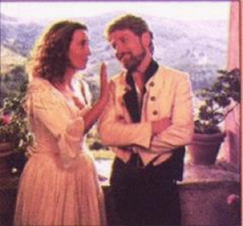

Favorite Romance Movies
| Casablanca (1942) "I remember every detail... the Germans wore gray..." Always (1989) "She can't make TOAST!" The Cutting Edge (1992) "If it was 40 degrees below zero and that button meant the difference between a warm satisfying life and a cold horrible death from hypothermia, I still wouldn't give you the satisfaction! The Princess Bride (1987) "Did you think this kind of thing happens every day?" Robin and Marion (1976) "I've never kissed a member of the clergy... would it be a sin?" Much Ado About Nothing (1993) "Thou and I are too wise to woo peaceably." |
 |